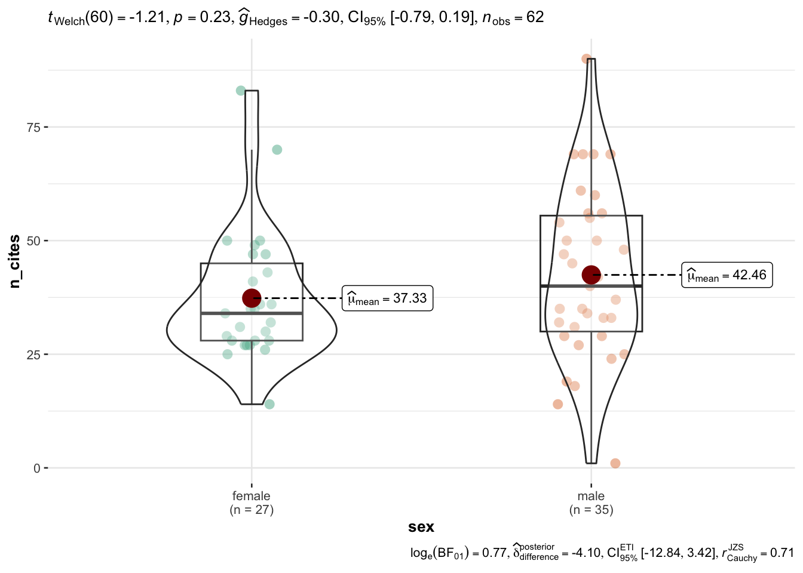
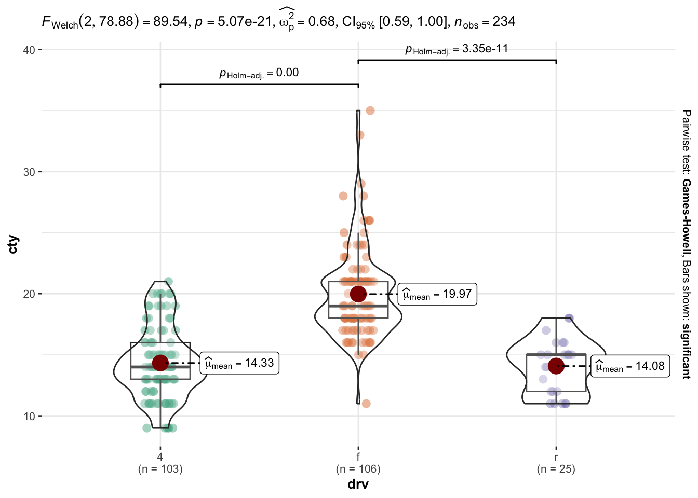

Download the yearspubs dataset from the workshop website, copy it to your project folder, and read it into R.
Estimate the correlation between academics’ number of publications (n_pubs) and number of citations (n_cites) in this sample.
Estimate the average number of citations for male and female academics (with 95% confidence intervals).
Estimate the effect size of this difference and test whether it is statistically significant. You can decide whether to use a parametric or nonparametric approach.
The correlation between number of publications and citations is 0.34.
Answer (c)
library(statsExpressions)centrality_description(yearspubs, x = sex, y = n_cites)
The average was estimates as 37.3 [33.4, 43.5] for females and 42.4 [35.0, 48.7] for males.
Answer (d)
two_sample_test(yearspubs, x = sex, y = n_cites, type ="parametric")
The effect size was \(g=-0.3\) but the difference was not significant \((p=.232)\).
# Optionally:library(ggstatsplot)ggbetweenstats(yearspubs, x = sex, y = n_cites)

Question 2
Using the mpg tibble from the {tidyverse} package, statistically test whether cars with the three different drive trains (drv) get significantly different city fuel efficiency (cty) on average. Calculate the effect size for this difference.
Click here for the answer key
oneway_anova(mpg, x = drv, y = cty)
The effect size was \(\omega^2=0.68\) and the difference was significant \((p<.001)\).
ggbetweenstats(mpg, x = drv, y = cty)

Question 3
Did you bring your own data? If so, load it into R and explore it using the tools we learned this week. Wrangle it a bit and maybe do some basic statistics on it, estimating correlations and comparing group means. If not, then look through the datasets on the workshop website and find one that is interesting to you; do the same process I described above to practice your skills in a more self-directed manner.
Resources
Web: Read more about the methods offered by the {correlation} package
Web: Read more about all the information in a {ggstatsplot} graphic
Learning Statistics with R: A free textbook on the ideas/theory underlying the statistical models we just discussed